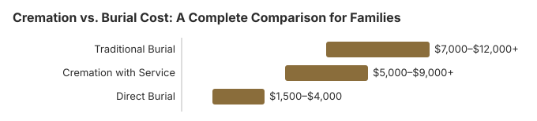

Cremation vs Burial: What Each Typically Costs
How we calculate these costs
Our cremation and burial comparisons blend the NFDA 2023 General Price List Study, the NFDA 2024 Cremation & Burial Report, and the CANA (Cremation Association of North America) 2024 Annual Report, forward-projected using the BLS Consumer Price Index: Funeral Services (CUUR0000SEGD02) and cross-checked against locally-filed General Price Lists required by the FTC Funeral Rule (16 CFR Part 453).
Cremation vs Burial Cost: The Short Answer
At the funeral home, a service with viewing followed by cremation had a national median of $6,280 in NFDA’s 2023 price study, against $8,300 for the same service followed by burial, and burial usually brings cemetery bills on top of that.
| NFDA 2023 national median | Viewing + cremation | Viewing + burial |
|---|---|---|
| Nondeclinable basic services fee | $2,495 | $2,459 |
| Container | $160 alternative cremation container | $2,500 metal burial casket |
| Cremation fee | $400 | Not part of a burial |
| Urn | $295 | Not part of a burial |
| Hearse | Not in NFDA’s cremation total | $375 |
| Vault | Not needed | $1,695 |
| Median total | $6,280 | $8,300 ($9,995 with vault) |
NFDA prints slightly different basic services fees in its two tables, and we copy them as published. Neither total includes a grave or niche, opening and closing, or a headstone. The FTC’s funeral buying guide notes that opening a grave usually costs hundreds of dollars, with more charged to fill it in, so the real gap between the two choices tends to be wider than the table shows.
Source: NFDA, 2023 General Price List Study news release (released December 8, 2023; checked October 29, 2026). These are national medians of funeral home charges. They leave out the cemetery plot, opening and closing, the marker and cash-advance items.
What this page is for. This page explains the cost difference between cremation and burial. The calculator is the tool that applies your state and your choices to that difference.
When a family is grieving, the last thing anyone wants to worry about is money. Yet understanding the real costs of cremation and burial can bring clarity during an overwhelming time. This guide walks you through the numbers honestly and gently, so you can make the choice that feels right for your family -- without financial surprises down the road. There is no wrong answer here. What matters most is honoring your loved one in a way that brings you peace.
Average Cost Comparison
The cost difference between cremation and burial can be significant, but it depends on the level of service you choose. Below is a side-by-side overview of the most common options families consider in 2026, drawn from the NFDA 2023 General Price List Study and the NFDA 2025 Cremation & Burial Report, which projected a 63.4% United States cremation rate for 2025, meaning cremation now accounts for most American funerals.
| Option | Typical Cost Range | What It Generally Includes |
|---|---|---|
| Traditional Burial | $7,000 – $12,000+ | Funeral service, viewing, embalming, casket, cemetery plot, vault, headstone |
| Cremation with Service | $5,000 – $9,000+ | Funeral or memorial service, viewing (optional), cremation fee, urn |
| Direct Cremation | $1,400 – $3,000 (state averages; NFDA 2023 median $2,645) | Basic transport, cremation process, return of remains |
| Direct Burial | $1,500 – $4,000 | Basic transport, burial without formal service, simple container |

These ranges reflect national averages. Your actual costs will depend on your location, the funeral home you choose, and the specific services and products your family selects. Urban areas and certain regions of the country tend to have higher prices, while rural communities may offer more affordable options.
What's Included in Burial Costs
A traditional burial involves several distinct expenses, and it helps to understand each one so there are no surprises. Here is what typically makes up the total burial cost:
- Casket ($2,000 – $10,000+): The single largest expense for most burials. Caskets range from simple cloth-covered wood to polished hardwood and metal designs. The FTC Funeral Rule guarantees your right to purchase a casket from any retailer, not just the funeral home.
- Burial vault or grave liner ($1,000 – $10,000): Most cemeteries require an outer container to prevent the ground from settling over time. A basic grave liner is more affordable, while sealed vaults cost considerably more.
- Cemetery plot ($1,000 – $4,000+): The cost of the land itself varies widely by region and cemetery type. Urban and established cemeteries tend to charge more than rural ones.
- Opening and closing the grave ($500 – $3,000 in 2025 city fee schedules: El Dorado, Kan.; Charlotte, N.C.): This is the fee the cemetery charges for digging and filling the grave. Weekend and holiday services often carry an additional surcharge.
- Headstone or grave marker (typical U.S. range $1,000 – $3,000+): A lasting memorial placed at the gravesite. Flat markers are less expensive than upright headstones, and custom engraving adds to the cost.
- Embalming ($500 – $800): Embalming preserves the body for viewing. It is not legally required in most situations, but many funeral homes recommend it if there will be an open-casket viewing.
- Funeral home service fees ($2,000 – $3,500): This non-declinable basic services fee covers the funeral director's coordination, paperwork, overhead, and professional guidance throughout the process.
What's Included in Cremation Costs
Cremation costs tend to be more straightforward, though they can add up depending on the services you choose. Here is what you can expect:
- Cremation fee ($200 – $800): The actual cost of the cremation process at the crematory. This is often separate from the funeral home's service charges.
- Urn ($50 – $3,000+): Urns range from simple containers to handcrafted works of art. Many families find beautiful and affordable urns from online retailers. Biodegradable urns are also available for scattering or green burial of ashes.
- Memorial service ($1,000 – $4,000): A memorial service held after cremation can be as simple or elaborate as you wish. Because the timeline is more flexible, families sometimes hold the service weeks or even months after the cremation.
- Viewing before cremation ($500 – $1,500): If your family wants a viewing or visitation, many funeral homes offer casket rental for the service, which is significantly less expensive than purchasing one.
- Transportation ($200 – $500): This covers the transfer of the deceased from the place of death to the funeral home or crematory, and the return of remains to the family.
Factors That Affect Your Decision
Choosing between cremation and burial is deeply personal, and cost is only one consideration. Here are the key factors families often weigh:
- Location: Funeral and burial costs vary dramatically by state and even by city. A burial in Manhattan may cost several times more than one in a small Midwestern town. Cremation costs also vary by region, though the differences tend to be smaller.
- Religious and cultural preferences: Faith traditions often guide this decision. Some religions have clear guidance on cremation or burial, while others leave the choice to the family. It is always worth discussing with your faith community if this is important to you.
- Environmental considerations: Some families choose cremation or green burial to minimize their environmental impact. Others find comfort in a traditional burial that creates a lasting physical resting place. Both perspectives are valid.
- Family wishes and traditions: Many families have longstanding traditions that bring comfort during grief. Whether it is a family cemetery plot, a particular type of service, or a cultural practice, these traditions can be a source of healing and connection.
- Timing and flexibility: Cremation offers more flexibility in scheduling a memorial service, since there is no urgency tied to the physical remains. Burial generally follows a more defined timeline, which some families prefer for its structure and sense of closure.
Hybrid Options
You do not have to choose strictly between a traditional burial and a simple cremation. Many families today find comfort in hybrid approaches that blend elements of both:
- Cremation after a full funeral service: The family holds a complete funeral with a viewing and ceremony, followed by cremation instead of burial. This allows for the traditional farewell while avoiding ongoing cemetery costs.
- Green burial: The body is buried in a biodegradable casket or shroud, without embalming, in a natural setting. Green burial costs typically range from $2,000 to $6,000 and appeal to families who value environmental stewardship.
- Partial cremation and burial: Some families choose to bury a portion of the cremated remains in a cemetery while keeping or scattering the rest. This creates a physical memorial site while still offering the flexibility of cremation.
- Home funerals: In many states, families can care for the deceased at home before burial or cremation. This can reduce costs and create a deeply personal, intimate farewell.
Environmental Considerations
For families who care about environmental impact, both cremation and burial have trade-offs worth understanding. Traditional burial involves embalming chemicals, non-biodegradable caskets, and concrete vaults, all of which have an environmental footprint. Cemeteries also use significant land and require ongoing maintenance.
Cremation uses less land but requires energy and releases carbon emissions during the process. A single cremation produces roughly 400 to 600 pounds of carbon dioxide.
Green alternatives are growing in availability. Natural or green burials skip embalming and use biodegradable containers, allowing the body to return to the earth naturally. Alkaline hydrolysis (sometimes called water cremation) is a newer option that uses water and alkali instead of flame, resulting in a lower carbon footprint. Human composting, legal in a growing number of states, transforms the body into nutrient-rich soil.
Whatever your family decides, know that there is no perfect choice -- only the one that aligns with your values and brings you comfort.
Questions to Consider
When deciding between cremation and burial, it can help to sit with a few practical questions. There is no rush. Take the time you need.
- Did your loved one express a preference during their lifetime? Check for a will, advance directive, or any written wishes.
- Are there religious or cultural expectations that matter to your family?
- Is having a physical gravesite to visit important to you and your family members?
- What is your realistic budget, and are there ways to get assistance if funds are limited?
- Do you want a formal funeral service, a casual memorial gathering, or something private?
- If choosing cremation, what would you like to do with the remains? Keep them, scatter them, or inter them?
- Are there family members whose opinions should be considered in the decision?
- Would a payment plan or pre-need arrangement help ease the financial burden?
Remember, you can always ask your funeral director for a detailed, itemized price list. The FTC Funeral Rule requires them to provide one. Comparing quotes from two or three providers can save thousands of dollars without compromising the dignity of the service.
Frequently Asked Questions
Is cremation always cheaper than burial?
In most cases, cremation costs less than a traditional burial. Direct cremation averages about $1,400 to $3,000 across our 50 state estimates, around NFDA's 2023 national median of $2,645, while a traditional burial typically costs $7,000 to $12,000 or more. However, if you add a full funeral service, viewing, and a premium urn, cremation costs can approach burial prices. The final cost depends on the specific services and products you choose.
Can you have a funeral service with cremation?
Yes, absolutely. Many families choose to hold a traditional funeral service with a viewing before cremation takes place. You can also hold a memorial service after cremation with the urn present. The flexibility of cremation means you can plan a service that feels right for your family, whether that is a formal ceremony, a casual gathering, or a private moment.
What is the cheapest funeral option?
Direct cremation is generally the least expensive funeral option; state averages on our cremation-by-state table run from $1,400 in Mississippi, Oklahoma and West Virginia to $3,000 in Hawaii. This includes basic transportation of the deceased, the cremation process itself, and return of the cremated remains. There is no viewing, visitation, or formal ceremony included. Direct burial is the next most affordable option, usually costing between $1,500 and $4,000.
Is a casket required for cremation?
No, a traditional casket is not required for cremation. Most crematories require a rigid, combustible container, which can be a simple cardboard or pressed-wood alternative cremation container. These typically cost between $50 and $200. However, if you choose to have a viewing or visitation before cremation, you may wish to rent a casket from the funeral home for the service.
Can you be buried without embalming?
Yes. Embalming is not required by law in most states, though some states require it under certain circumstances, such as when the body will be transported across state lines or when there is a significant delay before burial. Many families choose refrigeration as an alternative to embalming. Green burials specifically avoid embalming to allow natural decomposition.
How long after death can cremation take place?
Most states require a waiting period of 24 to 48 hours after death before cremation can occur. Some states also require additional permits or authorizations. In practice, cremation often takes place within 3 to 7 days after death, allowing time for paperwork, family decision-making, and any pre-cremation services like viewings. Your funeral director can advise on specific timing requirements in your area.
Are there religious restrictions on cremation?
Religious views on cremation vary. The Catholic Church has permitted cremation since 1963, though it prefers that cremated remains be kept in a sacred place rather than scattered. Most Protestant denominations accept cremation. Orthodox Judaism and Islam generally do not permit cremation. Hinduism traditionally favors cremation. Buddhism generally accepts both cremation and burial. It is always wise to consult with your faith leader if you have concerns.
What happens to the ashes after cremation?
After cremation, the cremated remains (often called ashes) are returned to the family, usually in a temporary container or the urn you have selected. Families can choose to keep the urn at home, place it in a columbarium niche at a cemetery, bury the urn in a cemetery plot, scatter the ashes in a meaningful location, divide the remains among family members, or incorporate them into memorial jewelry or keepsakes.
Can you scatter ashes anywhere?
Scattering laws vary by location. In general, you may scatter ashes on private land with the owner's permission, at sea (at least 3 nautical miles from shore per EPA regulations), and in many public lands and national parks with a permit. Some states and municipalities have specific restrictions. Always check local regulations before scattering, and be respectful of the environment and other people using the area.
How do cemetery costs affect the burial price?
Cemetery costs can significantly increase the total price of a burial. A cemetery plot alone can range from $1,000 to $4,000 or more depending on location. Additional cemetery fees include opening and closing the grave (about $500 to $3,000 in published 2025 city fee schedules: El Dorado, Kan.; Charlotte, N.C.), a burial vault or grave liner ($1,000 to $10,000), a headstone or grave marker (a typical U.S. range of $1,000 to $3,000+), and ongoing maintenance fees. In major metropolitan areas, these combined costs can add $5,000 to $15,000 or more to the overall burial expense.
Resources That May Help
- Funeral Consumers AllianceIndependent consumer advocacy for funeral rights
- Parting.comCompare funeral home prices in your area
- Funeral Insurance GuideCompare final expense and burial insurance options
- Payment Assistance GuideGovernment programs and financial help for funeral costs
Sources & review: The cremation and burial costs on this page draw on the NFDA 2023 General Price List Study, the NFDA 2024 Cremation & Burial Report, the CANA (Cremation Association of North America) 2024 Annual Report, the BLS Consumer Price Index: Funeral Services (CUUR0000SEGD02), CDC NCHS mortality data, the FTC Funeral Rule (16 CFR Part 453), the Funeral Consumers Alliance, the VA burial allowance (38 CFR § 3.1600) and the SSA lump-sum death payment (section 202(i) of the Social Security Act). Paul Paradis, Founder & Editor, reviewed this comparison on October 22, 2026; the national figures were updated October 2, 2026. Corrections: contact@funeralcostanalyzer.com.
Disclaimer: Information only, not professional advice. Full disclaimer.